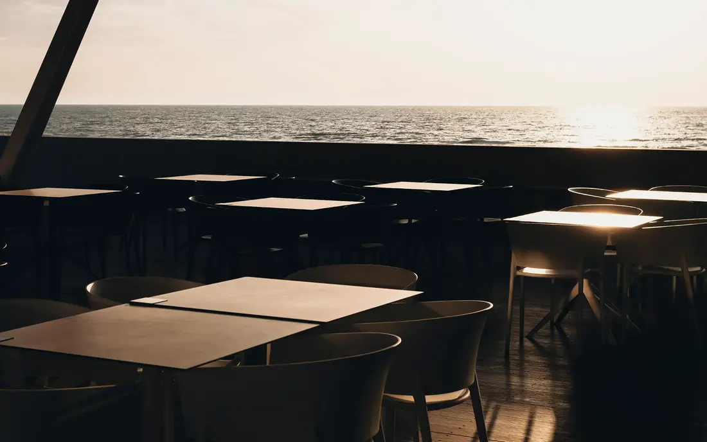
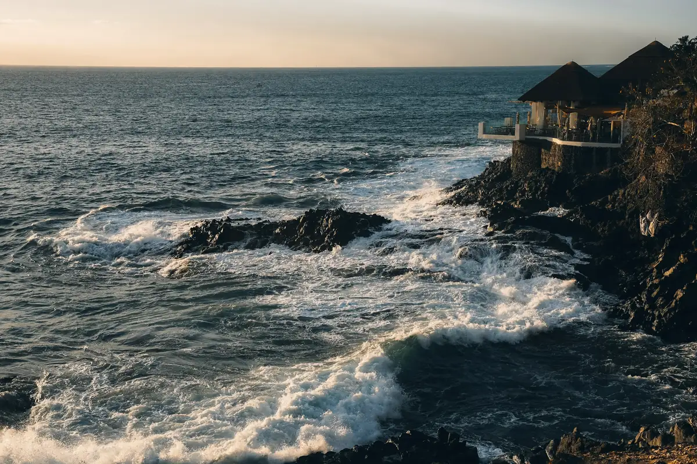
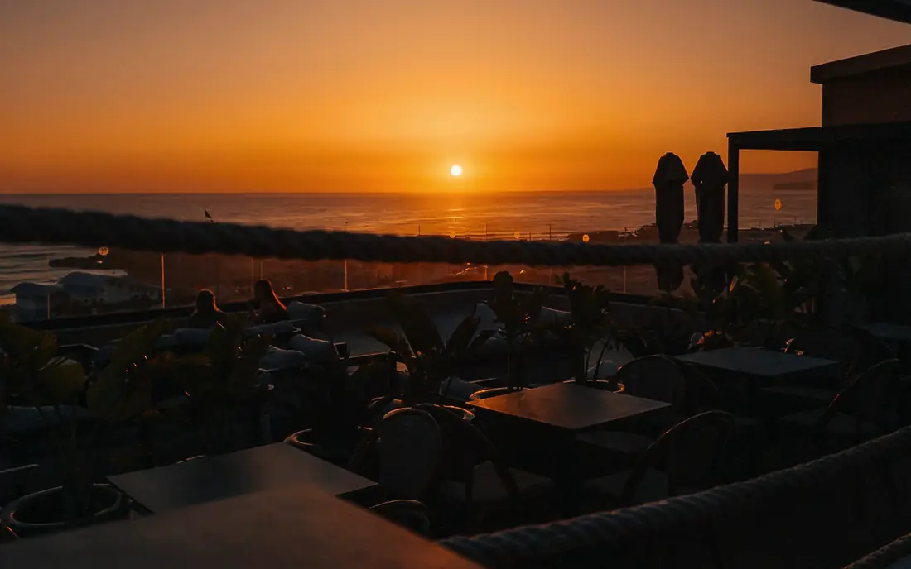
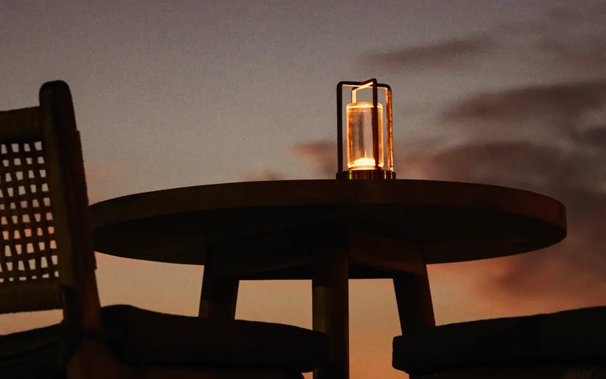
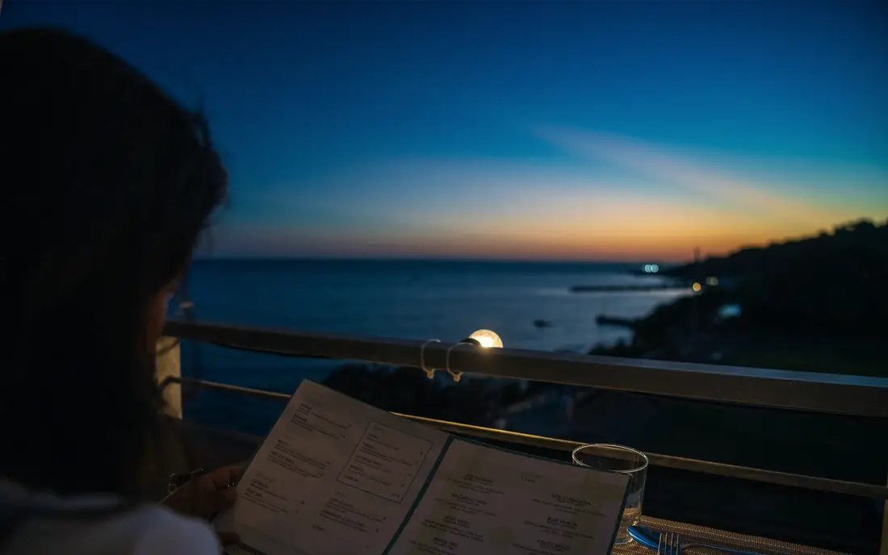
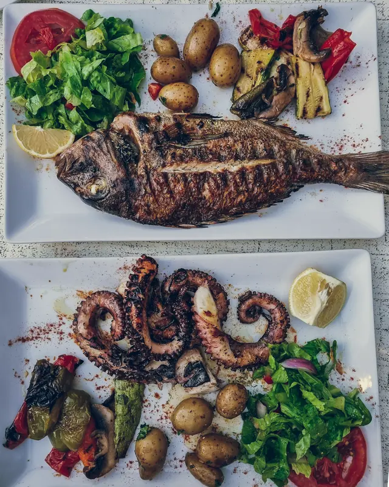
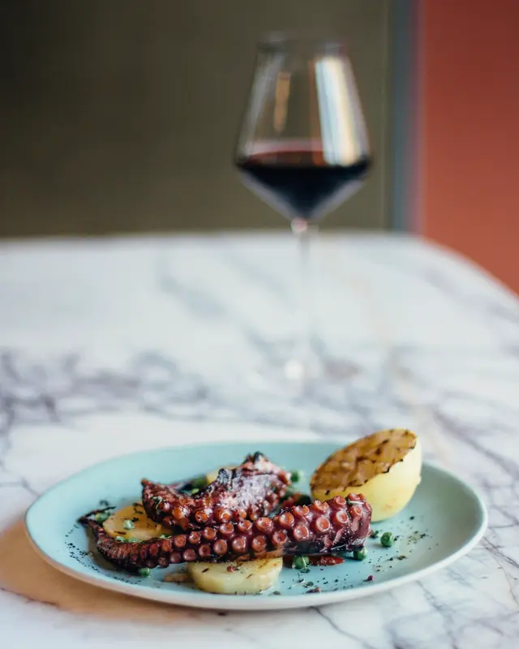
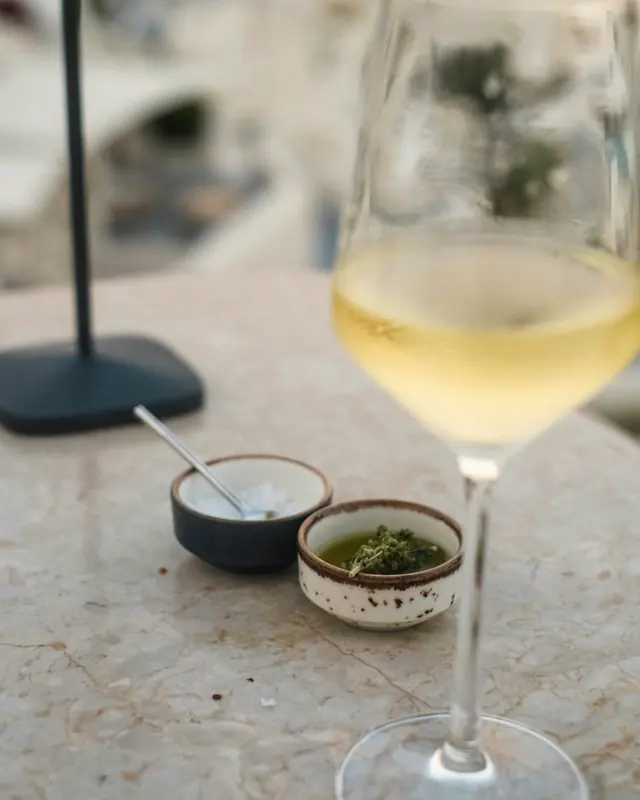
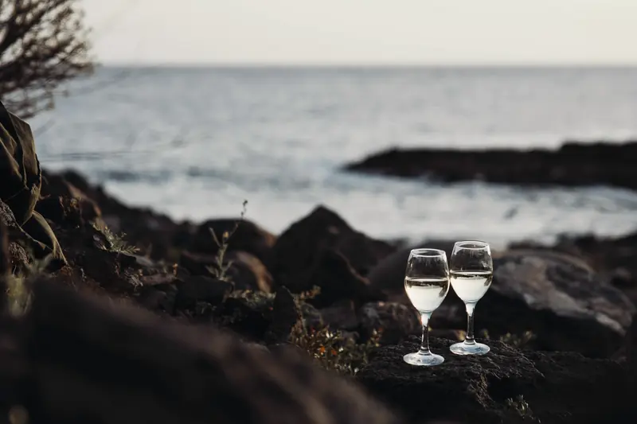
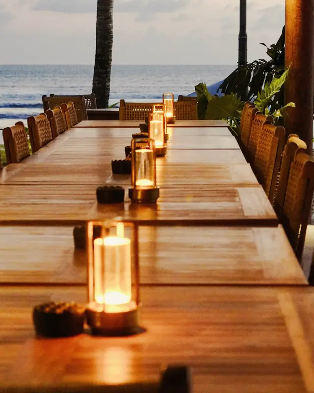

· Una hora antes
De la luz del día a la de las velas.
Así pasa una tarde en la terraza, de la primera mesa puesta a la hora azul.

Playa Paraíso · Adeje · Tenerife
Pescado de la lonja, brasa y vinos del sur, en una terraza sobre las rocas que mira a La Gomera.
Hoy el sol se pone a las
· Una hora antes
Así pasa una tarde en la terraza, de la primera mesa puesta a la hora azul.

· La puesta
En invierno se pone sobre el mar abierto; en primavera y a finales de verano, detrás de La Gomera.

· Después de la puesta
El cielo sigue rojo un rato y en las mesas se encienden los faroles. Es la hora del primer vino.

· Hora azul
Cuando oscurece, queda la luz de la mesa, el mar abajo y el ruido de la rompiente.
Reservar la mesa de la puestaLas horas se calculan para hoy en Playa Paraíso a partir de la puesta de sol. Fotos de muestra.
La pizarra de hoy ·
El pescado llega por la mañana y decide la pizarra de la noche. Lo demás es brasa, mojo y tiempo.




Para beber
Blancos de la DO Abona, la del sur de Tenerife, también por copas. Así el pescado no tiene que esperar a una botella entera.
Reseñas de muestra, para enseñar el formato. En la web real solo van reseñas reales, con su fuente y su fecha.
«Pedimos la vieja y nos sentaron junto a la barandilla justo cuando se ponía el sol. No se puede pedir más.»
«Las lapas con mojo verde, de lo mejor que hemos comido en la isla. Nos recomendaron un blanco del sur y acertaron.»
«Reservamos por WhatsApp para la puesta de sol y nos guardaron la mesa de la esquina. Solo por el pulpo merece la pena el viaje.»
Traducido del inglés
«Fuimos con los niños a las siete y media: tranquilo, rápido y con el mar delante. El bienmesabe, obligatorio.»
«Cenamos en la hora azul, con los faroles ya encendidos. El arroz meloso, para repetir.»
Cómo llegar
En Playa Paraíso, en la costa oeste de Adeje, entre Costa Adeje y Los Gigantes.
Calle de ejemplo 1, Playa Paraíso, Adeje (dirección de ejemplo)
Toque un sitio para ver la ruta en el mapa.
Tiempos aproximados en coche, sin tráfico.
Abrir Playa Paraíso en Google MapsElijan día, hora y cuántos son. Les dejamos el mensaje de WhatsApp escrito; ustedes solo lo envían.

 El Puertito de Adeje
El Puertito de Adeje